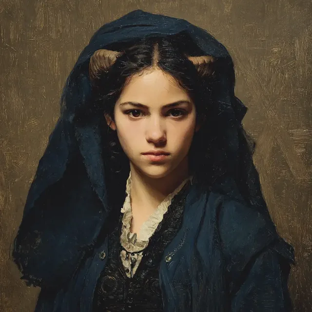

In a world where magic intertwines with the mundane, Sidra al-Najjar, a 13-year-old Arab tiefling girl, navigates the complexities of her identity shaped by her mixed heritage—her father a human and her mother a tiefling. Sidra wears veils that conceal her distinctive horns and skin, a necessity born from her upbringing in a household steeped in religious repression. Her powers as a sorcerer, perceived as being djinn-touched, are both a gift and a burden, leading to an internal struggle with the societal stigma surrounding her magic.
Despite these challenges, Sidra's curiosity remains unquenched, particularly regarding the Sufi whirling dervishes, whom she has heard referred to derogatorily as "gin possessed." One evening, during a dinner at Thymbra Farm, she is introduced by Osman Hamdi Bey, who praises her contributions at a nearby archaeological dig site. Seated at the children's table alongside Ahmet Yusuf, Sidra attempts to mimic the adults, her youthful enthusiasm shining through as she engages with Rufus Dimitrious, who spins grand tales that elicit skepticism from her and Ahmet. As she listens, her mind wanders to the practice of Sufi turning, observing Gizem Faruki with a mix of fascination and conflict, reflecting on her own magical abilities.
With a spirit of exploration, Sidra roams the grounds of the farmhouse, her curiosity driving her to disregard the private nature of the residence, embodying the essence of a girl caught between the worlds of magic and societal expectation. As a young mage hosting a djinn, she possesses various magical abilities, including the power to cast Detect Magic, which she used to sense a faint magical residue in a bedroom of the farmhouse. Her interactions with magical entities and keen perception of magical phenomena are notable, exemplified by her recognition of a door adorned with snake-handled imagery referencing the tale of Heracles.
At the archaeological dig site, Sidra detected magical traces and contributed to the exploration of a cave, where she examined pre-Greek frescoes alongside Jean-Zera Mongé. Her djinn enhanced her senses, allowing her to perceive the archaeological significance of the site. She played a pivotal role in confronting a wicked shade that emerged from a cabin on the ship, channeling her djinn to unleash radiant magic that destroyed the entity. Additionally, she and Ahmet discovered a teleportation ritual circle in the cargo hold and witnessed the aftermath of a spell rebound that threatened the ship. Sidra also alerted the captain about a flooding situation on the vessel, showcasing her bravery and resourcefulness in the face of danger.
Sidra possesses a deep understanding of spiritual matters and communicates with an inner presence she refers to as a djinn. She has a keen interest in magical tomes and seeks knowledge about various forms of magic and her own abilities. Engaging with texts that include cosmological treatises and works on monsters and souls, Sidra requested permission from Osman Hamdi Bey to send a letter to her mother in Constantinople, which was granted for delivery the following day. She explored a library filled with magical tomes, identifying themes within the collection and selecting Aramaic and Latin texts for potential copying. While investigating a fevered man, Sidra discerned that the affliction was spiritual rather than magical, using her abilities to identify a tether connecting him to an external entity, confirming that the condition was not caused by a djinn, showcasing her analytical approach in assessing the state of the fevered hunter and the implications of the detected tether.
Often finding herself in unfamiliar surroundings, Sidra drifts through the streets, communicating with her djinn for guidance, especially when confronted with threats. She is visibly shaken by fear during encounters, such as when she witnesses a winged, woman-like creature known as an albasti attempting to prey on a sleeping man. Despite her fear, she seeks cover and engages in combat, utilizing spells like Sacred Flame and a curse with a Nazar Bead against the creature. During her confrontation with the albasti, Sidra initially struggles with fear but successfully casts Sacred Flame, scorching the creature. She observes her companions' actions and offers support from a distance. After the encounter, she participates in discussions with her companions, including a notable conversation with Gizem about shared dreams and their implications.
Sidra's actions are influenced by her familial connection; her mother provides her with a toll token for passage to the Undercity, indicating a protective relationship and an understanding of the dangers Sidra may face. In her explorations, Sidra displays shyness, particularly when mingling with local children in the Undercity. She shows a willingness to engage with new people and environments, suggesting a blend of caution and curiosity. As she navigates the Undercity, she observes and absorbs the cultural dynamics around her while remaining aware of the potential risks involved in her adventures.
Recently, Sidra has also been seen wielding a Silver Yatagan, a curved Ottoman sword, and carrying a set of 30 Silver-Tipped Throwing Knives, which she received as rewards for her actions. During an investigation at a Cemetery with Ahmet Yusuf, they entered stealthily but were soon detected. They encountered a monkey-sized creature smoking a hookah and attempted to communicate with the surrounding Scavengers. Sidra produced baklava and candies to appease them, which were eagerly accepted by a small creature. They learned that a witch had displaced the Scavengers from their home, prompting Sidra and Ahmet to confront an Invisible Attacker and restore the Scavengers' tree.
While approaching the Invisible Attacker's tree, Sidra was struck by a rock thrown from above and fell unconscious. Ahmet revived her, and they launched a Fire Bolt at the tree, illuminating the area and revealing the Invisible Attacker. They coordinated their strikes, leading to the creature's defeat. After extinguishing the fire, Sidra and Ahmet reassured the Scavengers of their safety and returned to deliver the creature's body to Hano 'the Widow,' confirming the resolution of the Cemetery's disturbances. In recognition of their efforts, they received rewards and agreed to split their spoils, with Sidra keeping the Silver Yatagan and half of the throwing knives.
In her ongoing adventures in the Undercity, Sidra has confronted various adversaries, including a dwarf leader named Mr. Karen. She demonstrates spellcasting abilities, including a searing magical rebuke and attempts to cast Sleep, though the latter has failed due to magical backlash, leaving her with a persistent chill. Sidra has utilized Mage Hand to discreetly pursue shadows during performances and searched a private library for alchemical recipes. In an encounter with muggers, she was injured by a dagger thrown by Mr. Karen but retaliated with a magical attack that scorched him. Her interest in alchemical studies has grown, learning by observation from Papa Mert. Additionally, she has a talking cat named Greek Captain, who has provided her with information about the Council of the Ninth Life.
During the Festival of Candles, Sidra sought an audience with the Ghost of March to communicate with him, but he declined, stating, “Now is not the time, little one, but soon.” Amid the chaos at the festival, which included the death of Nazif, a perfumist, Sidra and her companions regrouped at a café to discuss the unfolding events. Later, the group stealthily entered Nazif’s perfumery to investigate his death, where they encountered Sharif the Strong Fur, a talking cat who took over Nazif's duties. Sharif requested Sidra's assistance with gravely ill cats, and she agreed, vouching for her companions. In a confrontation with animated cadavers beneath Saint Benoit Church, Sidra attempted to communicate with the undead in Romanian, although the understanding was unclear. Her spells contributed to the defeat of the undead, highlighting her active role in combat and problem-solving within the group.
In a recent encounter, Sidra activated her innate sorcery and cast Sacred Flame against an undead priest, illuminating the room and alarming nearby armed men. When confronted by Hyria, a tomb-raider leader, Sidra asserted that her group was preventing undead harm and had taken nothing from the site. Following Hyria's aggressive demands, Sidra retaliated by casting Fire Bolt at a gunman, igniting him through a radiant mist created by her ally's Moonbeam spell. As the confrontation escalated, Sidra manifested a surge of terror, and a cold mist appeared, heralding the arrival of a vampire. During the ensuing chaos, Sidra continued to contribute to the battle by casting spells, including Hellish Rebuke, against the undead guardians and the vampire. After the vampire's defeat, Sidra expressed relief at the end of the threat posed by the vampire, demonstrating her capability as a spellcaster, engaging in both offensive and defensive actions against various threats.
Recently, Sidra has also been seen wielding a magical short sword, one of two uncursed Magical Short Swords (+1) taken from a hoard. She has been mapping Undercity zones, identifying residential areas, an entertainment hub around the Leaky Pit, and routes frequented by upper-class visitors. Sidra has logged several amenities in the Undercity, including the Styx Bathhouse, the Thieves Bazaar, the Shapeshifter tailor shop, the Ermeydani fight venue, and Misty Pond, a serene subterranean park. She gathered hazardous samples of moss and fungi from Misty Pond for study. At Papa Mert's, an Undercity apothecary, she learned about basic medicinal and toxic properties and safer collection methods. During a mission, she cast Guidance on Jean-Zera and opened a Message link to coordinate with her allies. Sidra charmed a lead agent, reframing the threat they faced, and cast Dissonant Whispers on a trailing agent, causing him to flee.
Sidra al-Najjar possesses a djinn that influences her experiences and interactions. She has a strong magical presence, demonstrated by her ability to call down radiant magic. Sidra is skilled in handling animals, particularly a tortoise named Ashraf, to whom she offers flowers as a distraction. She is aware of magical dangers and feels a strong warning when approached by a man in a dream who attempts to cheat her. Sidra leads Ashraf away from a search, allowing her party to investigate a library. She participates in a confrontation with shadowy figures, using her magic to impose disadvantage on an enemy's attack. Her actions in battle contribute to the group's efforts against the shadows, showcasing her role as a capable and resourceful ally.
Beneath the Basilica Cistern and the Maiden Tower, Sidra al-Najjar came into a new kind of power. When she attuned to the Crown of Sargon in the thick of a dragon-fight, a magical rebound first stole thirteen hours of her memory and then tore her djinn bodily out of her, giving it a separate form and a name—Faravi—and remaking her from a djinn-possessed sorcerer into a djinn-master warlock; her body was freed of the "mortal shell" decay that had plagued it, and she could now yield herself briefly to Faravi's power or turn aside enchantment and divination cast against her. Crowned and attuned, she commanded the black dragon to flee and claimed the Crown of Sargon, later using its power to read the minds of ambushers on the road and to identify Aziz Sefa Bey as the man come to kill Mira.